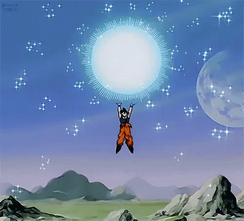

- El 25 Tenkaichi Budokai
- Las pruebas de Babidi
- Son Gohan vs Dabra
- Son Gokuh vs Majin Vegeta
- Son Gokuh vs Majin Vegeta
- Aparece Boo
- Son Gokuh vs Boo. El Super Saiya-jin de nivel 3
- Boo queda libre y Satán lo tranquiliza
- Boo se convierte en Majin Boo
- Majin Boo vs Gotenks
- Son Gohan vs Majin Boo
- Super Majin Boo
- Vegetto: La unión de Gokuh y Vegeta
- El verdadero Majin Boo
- La batalla final: Gokuh vs Boo
El 25 Tenkaichi Budokai
Cuando llega el día del Torneo todos se reunen y Gokuh con gran alegría conoce a su segundo hijo.
Goten
y Trunks son obligados a participar en el campeonato infantil. Tras las eliminatorias de los adultos
(que ahoran se hacen mediante una prueba de fuerza y no por combates), empieza el campeonato
infantil.
Trunks y Goten llegan a la final sin problemas, dejando a todos sorprendidos porque son más jóvenes
que
el resto de muchachos. Ambos son protagonistas de un espectacular combate, mientras que Satán al ver
a
Goten, reconoce en el a Gokuh, y le aterroriza la idea de luchar contra uno de ellos, ya que el
vencedor
tiene que luchar con Satán, en un combate de exhibición. Finalmente, Trunks gana a Goten y luego
espera
el combate con Satán. Éste por su parte se deja vencer sin luchar, para que la gente crea que tiene
buen
corazón y ha querido ilusionar al niño, así salva su reputación. Luego se hace el sorteo para los
adultos. Gokuh, conoce a dos extraños personajes. El primer combate enfrenta a Krilín con Bunta, y
de un
sólo puñetazo Krilín gana el combate. En el segundo, Piccolo se enfrenta a uno de los dos extraños
personajes, llamado Shin, pero extrañamente Piccolo se retira antes de comenzar. Nadie lo comprende
y
Piccolo no da explicaciones. En el tercer combate Biddle se enfrenta a Spopobitch, y demuestra su
superioridad, sin embargo, este hombre siempre se levanta, incluso después de que le rompan el
cuello,
se le vuelve a colocar. Gokuh dice que ese hombre no emite ninguna fuerza vital, que parece estar
muerto. Biddle recibe una paliza que está a punto de costarle la vida. Pero Yamu, el compañero de
Spopobitch, le prohibe seguir y Biddle pierde el combate gravemente herida. Gohan promete a
Spopobitch
que se vengará. Luego entran en combate el compañero de Shin y Gohan. Éste le pide a Gohan que se
transforme en Super-saiyajin. Gohan lo hace, porque sabe que su rival no es un cualquiera. De esta
forma
es reconocido por todos sus compañeros de clase. Piccolo explica que el rival al que él se enfrentó
es
el dios Kaioh-Shin (dios de todos los dioses), y Shin les dice que cuando Yamu y Spopobitch ataquen
a
Gohan que no intervengan. Los dos malvados se echan encima de Gohan y le roban su energía. Luego se
van
y Shin les persigue. Detrás de él, salen Gokuh, Vegeta, Piccolo y Krilín. Kiwito, el compañero de
Shin,
cura a Gohan de sus heridas, y junto con Biddle (que también ha sido curada por las Habichuelas
Mágicas)
salen en busca de los demás. Shin y Kiwito les explican una historia sobre un brujo que un día creó
un
monstruo, llamado Bu, muy peligroso, y que ahora, su hijo quiere sacarle de un encierro en el que se
encuentra, y necesita un montón de energía pura. Por eso Yamu y Spopobitch fueron al torneo.

Guerreos z participando en el torneo

Gohan transformandose en ssj2
Las pruebas de Babidi
Cuando llegan al lugar, ven una nave, en la que se encuentran Babidí (el brujo), Dabra (El Rey del
Infierno, que ha isdo poseido por Babidí), y otro soldado. Al cumplir su misión Yamu y Spopobitch
son
asesinados por Babidí. Luego el brujo y su soldado Pui Pui entran en la nave, pero Dabra se queda y
ataca a los guerreros. Así asesina a Kiwito, y escupiendo a Piccolo y a Krilín los convierte en
estatuas
de piedra. Luego se va a la nave. Encolerizados, Vegeta, Gokuh y Gohan le siguen al interior de la
nave,
sin escuchar a Shin que les pide paciencia. Biddle que se volvió a mitad de camino, regresa al
estadio y
explica lo sucedido a todos sus amigos. Goten y Trunks salen hacia el lugar. Shin sigue a los tres
héroes al interior de la nave, y allí les recibe Pui Pui. Gohan, Gokuh y Vegeta se juegan a piedra,
papel, tijera quien se enfrentará a él, y gana Vegeta. Pui Pui les advierte que cualquier herida que
reciban será energía que recibirá Bu. Vegeta no se preocupa y empieza el combate. En cuestión de
segundos, Pui Pui no puede más, así que Babidí les teletransporta al planeta de Pui Pui donde en
teoría
tendrá ventaka porque la fuerza de gravedad es 10 veces superior a la de La Tierra. Pero ellos
ignoran
que los héroes se han entrenado muchas veces a fuerza de gravedad muy superiores a esa. Vegeta
destruye
a Pui Pui sin inmutarse. Shin está sorprendido. Luego bajan al segundo nivel de la nave, donde Yakom
recibe a Gokuh. Babidí los lleva al planeta de Yakom, donde hay total oscuridad, pensando que si no
le
ven nunca le podrán vencer. Pero no saben que ellos pueden sentir la energía del enemigo y Gokuh no
tiene problemas para pelear. Además, para hacer un poco de luz, Gokuh se transforma en
Superguerrero.
Yakom, que se alimenta de luz, vuelve a Gokuh a su estado normal. Entonces Gokuh se transforma de
nuevo
en Superguerrero pero esta vez con una instensidad mucho mayor, y Yakom revienta ante tanta energía.
Luego bajan al tercer nivel. Allí les espera Dabra. Son transportados al Infierno. Gohan se
transforma
rápidamente en Superguerrero ya que Dabra no es un enemigo cualquiera. El combate es muy duro y
ninguno
de los dos toma la delantera.

Babidi y Dabura

Krilin convertido en piedra
Son Gohan vs Dabra
En un momento del combate Dabra se da cuenta de que Vegeta tiene un corazón oscuro, así que abandona
el
combate y se lo cuenta a Babidí (porque tiene el poder de poseer a los que tienen mal corazón). Así
Vegeta es poseido por Babidí y se encara a sus amigos. Babidí le ordena que mate a todos, pero
Vegeta le
hace caso y dice que sólo le interesa Gokuh, en realidad Vegeta no ha sido totalmente poseido, ya
que
razona por él mismo. Gokuh le dice a Babidí que les lleve a otro lugar y son llevados al Torneo de
Artes
Marciales. Allí Vegeta dispara una onda energética y mata a muchos espectadores. Gokuh dice a Babidí
que
si no les lleva a un sitio desierto, no se enfrentará a Vegeta. Así lo hace Babidí. Mientras, Shin y
Gohan bajan al siguiente nivel para buscar a Dabra y Babidí. Los encuentran y también a la bola
donde
está encerrado Bu. Babidí los teletransporta a todos fuera de la nave, ya que un golpe en la
estructura
de la nave podría hacer que Bu saliese de la bola sin todo su poder.

Gohan se lanza a la accion

Gohan contra dabura
Son Gokuh vs Majin Vegeta
La lucha de Gokuh y Vegeta es en Super-saiyajin nivel 2, y las heridas son increiblemente graves,
por lo
que la bola de Bu se llena de energía rápidamente. Gohan intenta destruirla antes de que el monstruo
salga pero no lo consigue. La bola se abre y sólo sale un monton de humo de su interior. Todos
piensan
que Bu ha muerto después de tanto tiempo encerrado, pero de repente el humo se condensa y toma
forma.
¡¡¡Aparece el monstruo!!! Sin embargo Bu es un gordito que parece infensivo

Doble colision entre los saiyans

Ninguno se da por vencido
Aparece Boo
El único que se da cuenta de su terrible poder es Gokuh que para el combate con Vegeta. Vegeta
acepta la
tregua, pero traiciona a Gokuh y le da un golpe que le hace perder el conocimiento. Vegeta quiere
encargarse de Bu sólo, porque ha salido de su encierro por su culpa. Se toma una Habicuela Mágica y
se
dirige al lugar. Por su parte, Bu no hace caso a Babidí y solo piensa en jugar. Dabra no lo aguanta
y le
insulta. Bu se enfurece y deja KO a Dabra ante el asombro de todos. Luego le toca el turno a Gohan
que
es vencido sin problemas al igual que Shin. Después Dabra reaparece y atraviesa a Bu con una lanza.
Bu
se la saca y regenera el agujero que le ha hecho. Entonces mata a Dabra y lo convierte en galleta y
se
lo come. En ese momento llega Vegeta al lugar del combate y desafía a Bu. Comienza una batalla en la
que
Vegeta parece mucho más poderoso que el monstruo, o al menos más hábil. Pero Bu regenera todas las
heridas que Vegeta le inflinge y Vegeta se va cansando. Bu toma la iniciativa, y Goten y Trunks
corren a
ayudar a Vegeta. Vegeta abraza a su hijo y luego deja inconscientes a los dos muchachos. Luego pide
a
Piccolo (que al morir Dabra ya ha vuelto a su estado normal), que se los lleve del lugar. Vegeta va
a
sacrificarse para matar a Bu. Acumula toda su energía y explota. Bu se desintegra y el cuerpo de
Vegeta
se seca y al acer al suelo se rompe en mil pedazos.
Piccolo le agradece a Vegeta su sacrificio, pero aterrorizado contempla como célula a célula Bu
comienza
a regenerarse. Rápidamente huye de allí. Babidí, que fue cortado por la mitad por Piccolo, le pide a
Bu
que le cure si no quiere volver a su encierro. Bu así lo hace, y los dos salen de viaje a destruir
ciudades. Por otro lado Gokuh, despierta y se dirige al Palacio Celestial dando una sorpresa a sus
amigos. Cuando les cuenta lo ocurrido todos se sobresaltan. Gokuh les dice que enseñará a los niños
la
técnica de la fusión para que puedan vencer a Bu. Mientras tanto, Bulma y los demás deciden reunir
las
Bolas del Dragón para resucitar a las victimas desde el inicio del campeonato con lo que reaparece
Kiwito, y guardan el segundo deseo para otra ocasión hasta que tengan más noticias sobre sus amigos.
Kiwito encuentra a Shin y salen en busca de Songohanda. Cuando lo encuentran se lo llevan al reino
de
los dioses.

Buu sale delhuevo

Buu vs Dabura
Son Gokuh vs Boo. El Super Saiya-jin de nivel 3
Para buscar las Dragon Ball Trunks se dirige a la Capsule Corp. para recoger el radar del Dragón.
Como
Gokuh no quiere que Babidí y Bu se interpongan en el camino de Trunks va al encuentro de los
monstruos
para ganar tiempo. Una vez allí Gokuh sorprende a todos y se transforma en Super Saiyajin Nivel 3
(Megaguerrero) y se muestra muy superior al monstruo. Sin embargo una vez cumplida la misión de
Trunks,
Gokuh abandona la batalla ya que el tiempo es vital para enseñarle a los niños la fusión. Cuando a
Gokuh
se le acaba el tiempo y debe volver al otro mundo le encarga a Piccolo el entrenamiento de los
pequeños.
Por su parte Songohanda es llevado al reino de los dioses donde debe repetir la hazaña de rey Arturo
y
sacar la Espada Sagrada de una roca, con la cual adquirirá un poder mayor al del monstruo.
Cuando lo consigue se sorprende al ver el peso de la espada ya que casi no la puede sostener aunque
poco
a poco la va controlando mejor.

Goku por primera vez en super saiyan 3

Goku vs Majin buu

Buu asesina a Babidi
Boo queda libre y Satán lo tranquiliza
Boo asesina a Babidí y al sentirse libre se marcha a destruir más ciudades. En este momento, la
humanidad le pide a Satán que desafíe al monstruo para salvarlos. El campeón no tiene más remedio
que
hacer lo que le piden. Sorprendentemente Satán se hace amigo del monstruo y Boo pacifica su corazón,
ya
no matará a más inocentes, solo lo hacía porque le enseñaron que aquello era bueno. Mientras, los
niños
consiguen fusionarse aunque con problemas al principio. Un día Bu vuelve a su nueva casa con un
cachorro
de perro, pero unos malvados le disparan y Bu monta en colera. Por suerte Satán les da una lección y
Boo
llega a tiempo para curar al perrito por lo que se calma. Sin embargo los malhechores atacan de
nuevo
pero esta vez a Satán. De nuevo Boo logra llegar a tiempo para curarle pero esta vez su ira no se
puede
parar. De repente la explulsa toda y sale de él un nuevo Bu (Evil Boo).

Satan se hace amigo de Majin Buu
Boo se convierte en Majin Boo
Se cierne una batlla entre los dos en la que el bonachón acaba convertido en galleta y comido por el
malvado Boo. De nuevo hay un proceso de metamorfosis y aparece Majin Boo. Mata a los malhechores que
dispararon a Satán y luego se dirige hacia el campeón pero sorprendentemente no puede atacarle así
que
se marcha. Gokuh se dirige al reino de los dioses y se encuentra con Son Gohan. Para probar la
dureza de
la espada, Shin le lanza un bloque del metal más duro que existe, pero cuando Gohan golpea con su
espada, esta se parte y de ella aparece el decano de los dioses. Este personaje asume el
entrenamiento
de Gohan prometiendole un gran poder. Bu se dirige al Palacio Celestial en busca de los niños.
Piccolo
se da cuenta y los manda al cuarto del espíritu y el tiempo. Como pueden le entretienen pero Bu es
demasiado impaciente así que Piccolo decide llevarle junto a los niños. Para que puedan entrenar un
poco
más Piccolo le guía por el camino más largo.

Buu vs Evil Buu
Majin Boo vs Gotenks
Una vez allí los niños se fusionan pero su fuerza parece insuficiente para ganar al monstruo,
incluso
cuando se convierten en Super Saiya-jin. Muestran una gran variedad de técnicas curiosas como los
fantasmas Kamikazes, que explotan al ser tocados por el monstruo. Gotenks hace creer a Piccolo que
todo
está perdido, entonces Piccolo se asusta y destruye la puerta de salida, quedando atrapados en la
dimensión. Bu se da cuenta de que alli morirá de hambre y se vuelve loco. Su gran energía abre una
brecha entre las dos dimensiones y escapa de allí, pero no Piccolo y Gotenks. En ese momento Gotenks
se
pone serio y decide sacar su verdadero potencial transformandose en Super Saiyajin Nivel 3.
Al fin abre una brecha y salen de alli. Una vez fuera se dan cuenta de que Bu se ha comido a sus
amigos.
Gotenks monta en colera y ataca a Boo. Cuando está a punto de vencer se acaba la fusión.

Gotenks alcanza el sjj3

Buu vs Gotenks ssj3
Son Gohan vs Majin Boo
Por suerte Son Gohan ha terminado su entrenamiemto y se dirige al lugar. Empieza una nueva batalla y
Bu
apenas logra tocar a Songohanda, así que huye asustado. Mientras nuestros amigos buscan a Dende y
por el
camino encuentran a Satán también. Una hora después Bu vuelve pero no desafía a Son Gohan sino a
Gotenks. Los niños caen en la trampa y se fusionan. En ese momento Boo les absorbe a ellos y a
Piccolo y
se transforma en un ser de fuerza extraordinaria contra el que nada puede Son Gohan.

Gohan vs Majin Buu

Gohan vs Buutenks
Super Majin Boo
Los dioses Kaiyoshin le dan a Gokuh los pendientes que llevan puestos y le dicen que si se pone uno
en
la oreja izquierda y Son Gohan el otro en la oreja derecha se unirán formando un nuevo ser, aunque
esta
fusión es para siempre. Para que Gokuh pueda volver a La Tierra, el decano le cede su vida y Gokuh
resucita. Gokuh se dirige a La Tierra y salva a su hijo, sin embargo al lanzarle el pendiente
Songohanda
no logra cogerlo y se pierde entre las rocas. Boo decide atacar a Gokuh pero antes de que llegue a
tocarle la fusión de los niños se acaba y vuelve a su estado original. Gokuh se rie de él, pero Boo
sorprende de nuevo absorbiendo a Songohanda. Ahora tiene más fuerza y sin limite de tiempo. Cuando
todo
parece perdido, el Gran Juez manda a Vegeta a la Tierra y se encuentra con Gokuh. Sin embargo Vegeta
rehusa fusionarse a su enemigo, pero cuando ve la fuerza de Boo no tiene más remedio que aceptar.
Vegetto: La unión de Gokuh y Vegeta
Una vez fusionados se hacen 125 veces más fuertes que Bu. Para salvar a sus amigos se dejan abosrber
por
el monstruo no sin antes ponerse una cubierta de protección para evitar que el monstruo se aproveche
de
sus fuerzas. Una vez dentro la unión termina de repente y encuentran a sus amigos y les arrancan del
monstruo, pero Bu aparece dentro de él mismo. Por suerte a Vegeta se le ocurre la idea de arrancar
también al Bu gordito de su capullo y todo empieza a reblancedecerse ya que Boo está a punto de
metamorfosearse de nuevo. Gokuh y Vegeta escapan con sus amigos.

Aparece super Vegito

Vegito vs Buuhan
El verdadero Majin Boo
Una vez fuera ven la transformación de Boo que se ha convertido en un ser mucho más pequeño y con
menos
fuerza pero con una maldad increiblemente superior, ya no tiene sentimientos y lo primero que hace
es
lanzar una bola de fuego sobre la Tierra. Shin se teletransporta a La Tierra para salvarles pero
solo
les da tiempo a salvar a Satán, Dende, Gokuh y Vegeta. Los niños, Gohan y Piccolo mueren y La Tierra
desaparece. Bu une sus células tras la explosión y sale hacia el reino de los dioses tras Gokuh y
Vegeta.

Kid buu aparece finalmente
La batalla final: Gokuh vs Boo
Allí comienza una nueva batalla, la última. Gokuh se transforma en Super Saiyajin Nivel 3 y comienza
el
combate. El combate parece igualado pero Gokuh no consigue acumular la energía necesaria para acabar
con
Boo, para ello necesitaría un minuto de concentración. Vegeta decide entretener al monstruo mientras
tanto, pero Bu es demasiado fuerte para él. Además a Gokuh le sucede algo extraño y en vez de
aumentar
su energía vuelve a su estado normal. En ese momento Satán desafía a Bu. El monstruo se dirige a
atacarle pero ante de llegar se para y empieza a gritar de dolor. Todos se sorprenden y de repente
el
malvado Bu explusa de su cuerpo al gordito. Bu vuelve a por Vegeta pero antes de que le remate el Bu
gordito despierta y ataca al Bu malvado. Empiezan a luchar entre ellos. Vegeta le pide a Dende que
vayan
a Namec y reunan las Bolas del Dragón. Así lo hacen. En el primer deseo vuelven La Tierra a su forma
original. En el segundo resucitan a todos los muertos desde el inicio del Campeonato Mundial de
Artes
Marciales. Ahora la suerte está echada, Vegeta pide a los terrícolas a traves de Kaito que les cedan
su
energía para formar una Genkidama y matar al monstruo pero los terrícolas asustados no le hacen
caso.
Sin embargo si escuchan a Satán, su héroe, y al fin consiguen formarla. Es entonces cuando Gokuh la
lanza contra Bu. El monstruo sorprende de nuevo parándola. Todo parece perdido, Gokuh no tiene
fuerzas
suficientes para impedir que Bu le devuelva la Genkidama. Pero entonces se acuerdan de que les queda
un
deseo por pedir al Dragón de Namec. Le piden que Gokuh recupere sus fuerzas y al fin Gokuh destruye
al
monstruo. Así acaba la pesadilla.

Goku mordiendo a kid buu

La Genkidama definitiva